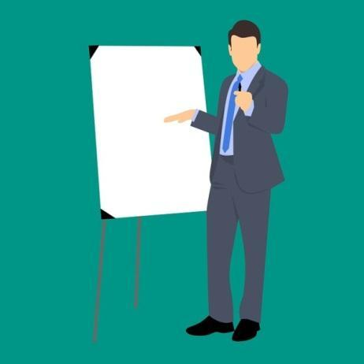

Za udeležence
Za izvajalce
Trainees Edition
Trainers Edition
MODUL 18: SPLOŠNE SMERNICE za IZVAJALCE USPOSABLJANJA
Opis modula
Ta modul pomaga izvajalcem usposabljanja pri oblikovanju, izvajanju in vrednotenju učnih ur o različnih vidikih novičarske pismenosti (moduli 1-17). Gradivo obsega 17 različnih tem, ki spadajo v tri vsebinske sklope:
- del: Razumevanje novinarskega okolja, moduli 1-8
- del: Mediji in novinarstvo, moduli 9-11
- del: Kritično razmišljanje o novicah, moduli 12-17
Teme lahko uporabijo izkušeni izobraževalci in drugi strokovnjaki, ki že poučujejo novičarsko pismenost, pa tudi tisti z manj pedagoškimi izkušnjami, ki jih zanima vodenje delavnic in/ali tečajev usposabljanja o novičarski pismenosti za odrasle udeležence izobraževanja. Gradivo za usposabljanje je obsežno in raznoliko. Vsaka tema predstavlja samostojno poglavje in jo je mogoče poučevati ločeno od drugih tem. Vsebuje cilje, učne rezultate in predloge za strukturiranje usposabljanja ter predloge nekaterih dejavnosti poučevanja in učenja. V teh smernicah za izvajalce usposabljanja:
- predstavljamo nekatere značilnosti odraslih udeležencev izobraževanja;
- predstavljamo različne vloge izvajalca izobraževanja;
- opisujemo učne metode in tehnike, ki jih lahko uporabimo pri poučevanju novičarske pismenosti;
- usmerjamo izvajalce usposabljanj pri pripravi učnih srečanj, tako da predstavimo strukturo načrta učne ure.
Vsebina: Splošne smernice za izvajalce usposabljanja
Značilnosti odraslih udeležencev izobraževanja
Projekt je namenjen različnim skupinam odraslih, njegov cilj pa je izboljšati njihovo novičarsko pismenost in sposobnost kritičnega razmišljanja. Odrasli udeleženci se učijo iz različnih razlogov, pri tem pa običajno pridobijo določen nabor spretnosti. Nekateri odrasli udeleženci se učijo, da bi dokončali izobraževalni program, ki so ga začeli in niso dokončali v mladosti ali adolescenci. Učijo se, da bi napredovali na delovnem mestu, obdržali delovno mesto ali sploh dobili službo. Učijo se, da bi spremenili poklicno pot. Učijo se pridobivati znanje, ki ga potrebujejo v prostem času, pri opravljanju svojih hobijev, na potovanjih. Učijo se slediti zahtevam sprememb v vsakdanjem življenju, ki jih prinaša digitalizacija družbe itd.
Različni kot razlogi za učenje so tudi značilnosti udeležencev. Odrasli udeleženci se razlikujejo po starosti, spolu, stopnji izobrazbe, socialno-ekonomskem statusu, zaposlitvenem statusu, interesih, prepričanjih, duševnih sposobnostih, stopnji motivacije za učenje itd. Igrajo različne življenjske vloge: starši, zaposleni, otroci, prijatelji, partnerji, sodelavci, državljani. Njihove potrebe po novičarski pismenosti pri 30 letih se razlikujejo od potreb po novičarski pismenosti pri 50 ali 65 letih in so odvisne od različnih zgoraj navedenih dejavnikov. Zato je upoštevanje raznolikega spektra potreb odraslih udeležencev izobraževanja ključnega pomena za vsakega izobraževalca, ki dela z odraslimi udeleženci izobraževanja.
V skladu s knjigo Malcolma Knowlesa The Modern Practice of Adult Education – from Pedagogy to Andragogy(Sodobna praksa izobraževanja odraslih – od pedagogike do andragogike) odrasli udeleženci potrebujejo samopotrjevanje in individualno učenje. Poleg tega zahtevajo priznanje svojega statusa. Študije o izobraževanju odraslih poudarjajo izkustveno metodo, s katero lahko najbolje usvojijo novo znanje. Odrasli ne povezujejo pojmov s pomnjenjem ali učenjem strukture, temveč s sklicevanjem na izkustveni kontekst. Tako se v zvezi z učnim načrtom ustvarjajo subjektivne ideje, domneve in mnenja, ki lahko okrepijo metodo poučevanja in izboljšajo podane vsebine.
Starejši odrasli so aktivnejši v učnih situacijah, v katerih nimajo dvomov ali skrbi glede svojih učnih sposobnosti, ter so bolj motivirani in dejavni pri nalogah, ki jih dojemajo kot pomembne, koristne in smiselne v njihovem vsakdanjem življenju. Zato je izbira izobraževalnih metod povezana s pojmovanjem učenja: učenje kot samopreobrazba, učenje kot boljše razumevanje življenja, učenje kot iskanje osebnega pomena, učenje kot zbiranje informacij za poznejšo uporabo (Radovan, oktober 2019, diapozitiv 6).
Mnogi izvajalci usposabljanja pričakujejo, da se bodo njihovi tečajniki obnašali kot "zreli ljudje". In ko pride do neprimernega vedenja, lahko hitro postane predmet obsojanja ali celo žalitev. Večinoma je težava že v miselnosti izvajalca usposabljanja ("Saj niso otroci, sami bodo to prebrali!"), kar se odraža v njegovem odnosu do poučevanja.
Učne zmožnosti odraslih
V stroki že dolgo velja, da se "sposobnost učenja povečuje do 20. leta starosti, nato se za nekaj let ustavi in nato upada" (Jelenc, Sabina, 1996, str. 21). Odkritja o delovanju možganov to zanikajo, čeprav se s starostjo slabšajo čutila (vid, sluh), hitrost (telesnega in intelektualnega odzivanja) in telesna moč (ne pa tudi intelektualna moč). Učne sposobnosti odraslih so odvisne predvsem od stalnosti njihove miselne dejavnosti. Zdrav odrasel človek, ki je vedno umsko dejaven, se lahko počasneje uči vsebine, s katero nima izkušenj ali ki se precej razlikuje od njegovih izkušenj, vendar si jo bo zapomnil enako dobro kot mlad človek. Vendar si odrasli še hitreje kot mladi zapomnijo vsebine, ki se ujemajo z njihovimi izkušnjami. Glede na to, da so odrasli običajno čustveno bolj stabilni kot mladi (kar jim omogoča, da se bolje osredotočijo na vsebino) in da so bolj potrpežljivi (kar jim omogoča, da so bolj vztrajni pri doseganju učnih ciljev), so lahko izvajalci izobraževanj za odrasle brez skrbi. Učinkovit izvajalec usposabljanja pri podajanju vsebin udeležencem izobraževanja omogoča, da vsebino povežejo z lastnimi izkušnjami in vidijo pomen za svoje življenje in delo (Morano, avgust 2013, str. 6).
Načrtovanje usposabljanja o novičarski pismenosti
Gradivo za usposabljanje, pripravljeno v okviru tega projekta, je bogato in obsežno. Kateri del vsebine usposabljanja naj izvajalec izobraževanja uporabi – vse module ali samo določene? Kakšna so merila za izbiro gradiva za usposabljanje za izvedbo delavnice, seminarja ali daljšega tečaja o novičarski pismenosti?
Pri odločanju, katere vsebine uporabiti, smo pripravili nekaj vprašanj za izvajalca usposabljanja, ki mu bodo pomagala pri sprejemanju odločitev, ki so v najboljšem interesu njegovih udeležencev:
- Kdo so udeleženci izobraževanja in kakšne so njihove značilnosti (starost, stopnja izobrazbe, zaposlitveni status, socialne okoliščine, motivacija za udeležbo na usposabljanju itd.)?
Nasvet: Poskusite zbrati čim več informacij o udeležencih izobraževanja, da se boste lahko ustrezno pripravili. Organizatorja usposabljanja lahko prosite, da vam posreduje nekatere podatke, lahko pa pripravite kratek spletni obrazec in ga pred začetkom usposabljanja pošljete udeležencem.
- Katere so glavne vrzeli v znanju udeležencev?
Nasvet: Preprost način za preverjanje obstoječega znanja udeležencev je, da pripravite kratek spletni obrazec za (samo)oceno udeležencev glede vsebine, ki jo boste poučevali, in med pripravami na usposabljanje zberete odgovore udeležencev.
- Koliko časa je na voljo za usposabljanje?
Nasvet: Bodite realistični. Če se pripravljate na štiriurno delavnico, poskrbite, da ne boste vzeli preveč vsebine in vsega usposabljanja namenili predavanju. Ne glede na trajanje usposabljanja poskrbite, da pripravite dejavnosti, ki so za udeležence pomembne in jih lahko povežejo s svojimi izkušnjami.
- Kakšen je način izvedbe: neposreden stik v učilnici, preko spleta, kombinirani način izvedbe?
Nasvet: Način izvedbe ima velik vpliv na izvedbo poučevanja in ima svoje posebnosti. Poskrbite, da boste dejavnosti prilagodili glede na način izvedbe. Če usposabljanje izvajate prek spleta, razmislite, kako boste ohranili motivacijo, kdaj boste naredili odmore, kako boste zagotovili, da bodo udeleženci aktivni (npr. jih razdelite v ločene spletne sobe za delo v skupinah ali parih). Pri neposrednem usposabljanju preverite, kako velik je prostor za poučevanje in kakšno opremo ima.
- Kako bom ugotovil, ali so udeleženci dosegli učne cilje?
Nasvet: Obstaja več načinov za pridobivanje povratnih informacij od udeležencev. Pripravite lahko kratek ocenjevalni obrazec, obrazec za samoocenjevanje udeležencev, kviz itd.
Trajanje
Trajanje usposabljanja mora biti v skladu s potrebami udeležencev, učnimi cilji in razpoložljivim časom. Izobraževalci lahko pripravijo in izvajajo različne vrste usposabljanja:
- enodnevne delavnice o določeni temi
- seminar
- daljši tečaj
Izobraževalci in učni proces
Izobraževalci so učitelji različnih predmetov, knjižničarji, izobraževalci v javnih centrih za izobraževanje odraslih, na univerzah za tretje življenjsko obdobje, posamezniki brez formalne pedagoške izobrazbe, ki vodijo delavnice v nevladnih organizacijah itd.
"Z ljudmi ravnajte, kot da so to, kar bi morali biti, in pomagate jim, da postanejo to, kar so sposobni biti."
Johann Wolfgang Goethe
Sodobni izvajalec izobraževanja se zaveda, da nikogar ne more ničesar naučiti, ampak mu lahko le pomaga, da se nauči. Zato vsa njegova osebna priprava na izobraževanje temelji na poslanstvu: "Pomagam ljudem pri učenju in se učim, ko to počnem." Sodobni izobraževalec se ne obremenjuje s preveč snovi, določene v učbeniku in učnem načrtu, saj ve, da jih bo s pravo osebno pripravo na izobraževanje in pravim načinom vodenja učnega procesa spodbudil, da se določenih delov snovi naučijo sami. Že pri razlagi pojma "odrasli" smo videli, da tudi odrasli še vedno potrebujejo vzgojitelja, saj proces zorenja poteka vse življenje. Seveda to velja bolj za daljše oblike izobraževanja, vendar lahko tudi pri enodnevnem usposabljanju opazimo spremembe v vedenju udeležencev (Morano, avgust 2013, str. 16).
Izobraževalec kot glasnik informacij
Posredovanje informacij je ena od osnovnih komunikacijskih spretnosti, ki se lahko uporablja tako pri kratki razlagi ali pojasnilu kot tudi pri daljšem predavanju. Za učinkovito posredovanje informacij je ključno, da upoštevamo naslednja načela (Marentič Požarnik, 2018, str. 244):
- jasnost, razumljivost (najavite cilj in strukturo, tj. uvod, jedro, zaključek; sklicujte se na predhodno znanje in izkušnje, navedite dobre primere, uporabite slikovno gradivo);
- čustvena vpletenost (pokažite osebno vpletenost, žive slike, povezovanje z obstoječimi interesi);
- mentalna aktivacija udeležencev (problemska oblika intervencije, vmesna vprašanja za razmislek);
- skladnost med verbalno in neverbalno komunikacijo.
Zastavljanje vprašanj
Postavljanje vprašanj je ena od osnovnih dejavnosti izobraževalcev, vendar so vprašanja pogosta takšna, ki zahtevajo le reprodukcijo podatkov, medtem ko vprašanja na višji kognitivni ravni zahtevajo razmišljanje, primerjanje, analiziranje ali sklepanje. Delež teh vprašanj se lahko poveča, če izobraževalce na to opozorimo.
Pomembna je tudi strategija postavljanja vprašanj: izobraževalec postavi vprašanje celotni skupini, počaka, nato pokliče udeleženca in počaka na odgovor. Čas čakanja je izrednega pomena za kakovost udeleženčevega razmišljanja in odgovora (Marentič Požarnik, 2018, str. 245).
Učinkovit izobraževalec se osredotoča na udeležence in na rezultate ter se izogiba dolgotrajnim predavanjem in raje pripravi pestro zaporedje svojih dejavnosti in dejavnosti udeležencev. To pomeni, da če je bil izobraževalec vir sporočil, jih bo ohranil kratke in udeležencem omogočil, da s sporočili po koncu nekaj naredijo: lahko jih predelajo ali uporabijo za rešitev praktične naloge.
Metodologija
Odrasla populacija ima svoje učne značilnosti, zato je izbira izobraževalnih metod zelo pomembna. Na izbiro metod vplivajo tudi (Radovan, oktober 2019, diapozitiv 4-5):
- cilji in vsebina izbora;
- značilnosti učne skupine;
- psihološke potrebe, ki se upoštevajo pri izbiri metod;
- predavateljevo ali tutorjevo pojmovanje učenja.
Pri ciljih in vsebini usposabljanja je treba biti pozoren na:
- taksonomijo ciljev (Bloomova taksonomija);
- bolj praktične ali bolj abstraktne vsebine;
- motivacijsko moč vsebine;
- katere metodološke pristope omogoča.
Bloomova taksonomija učnih ciljev ima 6 stopenj:
- poznavanje
- razumevanje
- uporaba
- analiza
- sinteza
- vrednotenje
Vir: https://cft.vanderbilt.edu/guides-sub-pages/blooms-taxonomy/, January 2022
Metode izobraževanja, ki so najprimernejše za starejše, so skupinske in izkustvene metode izobraževanja. Te vključujejo: metodo razpravljanja, metodo reševanja problemov, metodo projektnega učenja, metodo raziskovanja in druge (Radovan, oktober 2019, diapozitiva 10-11).
Izkustveno učenje
Izraz "izkustveno" nakazuje, da je takšno učenje osredotočeno na izkušnje. Teorijo je razvil David A. Kolb (1984) na podlagi raziskav Deweyja, Lewina in Piageta o pomenu in vlogi izkušenj pri učenju. Po Kolbu je izkustveno učenje proces preoblikovanja izkušenj v znanje (Morano, avgust 2013, str. 18).
Kolbov cikel
V prvi fazi gre za doživljanje ali podoživljanje izkušnje, v drugi fazi za razmišljanje o izkušnji, v tretji fazi za oblikovanje sklepov, v četrti fazi pa za dejavno prizadevanje za potrditev sklepov:
- konkretna (resnična, čutna) izkušnja
- razmislek o izkušnji
- abstraktna (pojmovna, mentalna) konceptualizacija (ideja, način delovanja, način dogajanja)
- aktivno eksperimentiranje
Primer dejavnosti:
Korak 1: Udeleženci izobraževanja preberejo članek, ki je lažna novica, ne da bi to vedeli. Članek je vzet iz gradiva za usposabljanje (konkretna izkušnja).
Korak 2: Udeleženci razmišljajo o svojih izkušnjah med branjem članka (refleksivno opazovanje):
Kako ste se počutili ob branju članka?
Ali se vam zdijo predstavljene informacije vredne zaupanja? Zakaj? Zakaj ne?
Korak 3: Udeleženci na podlagi članka spoznajo značilnosti lažnih novic (abstraktna konceptualizacija).
Ali lahko prepoznate kakšne znake, da je novica lažna?
Kateri so ti znaki?
Kaj se lahko iz njih naučimo?
Kako lahko to znanje uporabite v prihodnosti?
Korak 4: Udeleženci preizkusijo, kaj so se naučili (aktivno eksperimentiranje).
Udeleženci preberejo dve različni novici: ena je lažna, druga pa zanesljiva. Pridobljeno znanje poskušajo uporabiti pri prepoznavanju lažnih novic.
Vir: https://www.skillshub.com/what-are-kolbs-learning-styles/, January 2022
Učna priprava
Izobraževanje je kot gledališka predstava. Režiser gledališke predstave ima scenarij, s katerim poskrbi, da gledališka predstava doseže svoj namen in gladko poteka. Enako velja za izvajalca izobraževanja. Tudi on je režiser predstave. Posebnost te predstave je sodelovanje občinstva. Pri tem lahko pride do presenečenj, zato je izobraževalni načrt (scenarij) izjemno pomemben. Zakaj? Obstajajo vsaj trije argumenti za pomembnost učnega načrta:
- Načrt učne ure omogoča, da ima izvajalec pred seboj celotno učno uro in da lahko podrobnosti obravnava glede na njihov pomen za uspeh učne ure.
- Izvedba usposabljanja je lažja (vodja usposabljanja lahko prilagodi potek usposabljanja med izvajanjem).
- Priprava na ponovitev usposabljanja je krajša in hitrejša (izvajalec usposabljanja ob ponovitvi usposabljanja osveži potek, morda nekoliko spremeni scenarij v skladu s pripombami, ki jih je zapisal ali prejel po prvi izvedbi, in se osredotoči na posebnosti nove skupine).
Scenarij je na začetku le okvirni načrt za izvedbo usposabljanja. Med osebno pripravo na usposabljanje se izvajalec usposabljanja nenehno vrača k temu okvirnemu načrtu ter ga dopolnjuje in spreminja. Končna različica scenarija se ustvari šele tik pred začetkom usposabljanja. Scenarij vsebuje vrstni red, v katerem bodo potekale različne sestavine usposabljanja, njihov opis, okvirno trajanje in potrebne pripomočke. Oblika je lahko zelo preprosta, npr.:
| Tema | Dejavnosti izvajalca usposabljanja | Dejavnosti udeležencev usposabljanja | Učni pripomočki | Čas |
Sestavni deli scenarija usposabljanja so:
- ogrevanje in medsebojno spoznavanje
- povezovanje okoli skupnih ciljev
- dejavnosti izvajalca usposabljanja za doseganje ciljev usposabljanja (npr. kratka interaktivna predavanja o določenih temah, dajanje navodil, spremljanje in nadzor procesov, dajanje povratnih informacij, moderiranje procesov itd.)
- dejavnosti udeležencev
- odmori (da se udeleženci lahko neformalno srečajo in izmenjajo izkušnje; da se osvežijo in zadovoljijo fiziološke potrebe; da lahko izvajalec usposabljanja oceni skladnost usposabljanja s scenarijem in se odloči o morebitnih spremembah nadaljnjega ukrepanja)
- dodaten čas za reševanje nepredvidenih težav
- ocenjevanje
V naslednjem delu Smernic bo obravnavana vsaj ena metoda in tehnika za:
- ogrevanje in medsebojno spoznavanje
- povezovanje okoli skupnih ciljev
- dejavnosti izvajalcev usposabljanja za doseganje ciljev usposabljanja
- dejavnosti udeležencev pri doseganju ciljev
- vrednotenje usposabljanja
Metode in tehnike poučevanja
Dejavnost za ''prebijanje ledu''
Na začetku usposabljanja imajo udeleženci mešane občutke:
- radovednost,
- pričakovanja,
- negotovost,
- zadrega,
- zaskrbljenost itd.
Posamezniki iščejo svoje mesto v skupini in prepoznavajo osrednje osebnosti skupine. Ekstravertirani udeleženci komaj čakajo, da spregovorijo, introvertirani pa so tiho in samo opazujejo. Skupina oddaja napeto energijo, na katero se mnogi predavatelji odzovejo s strahom.
Učinkovit predavatelj se zaveda, da je treba sprostiti napetost, zato začne srečanje s tako imenovanimi dejavnostmi za ''prebijanje ledu''. Te dejavnosti udeležencem omogočajo, da se začnejo pripravljati na novo okolje in nov dogodek (Morano, avgust 2013, str. 20-21).
Individualna metoda ogrevanja
Vsak udeleženec nariše svojo sliko pri delu (ali v zasebnem življenju) na papir A4 (še bolje na papir A3 ali celo na plakat, če si to lahko privoščite). S časovnega vidika je koristno, da izobraževalec predhodno pokaže svoj primer, če pa želite več ustvarjalnosti, je morda bolje, da jim daste vso svobodo. Vsaka oseba nato svoj izdelek nalepi na del stene z oznako "Kdo smo?" (ali "Tukaj smo:") in v eni minuti (stoje) razloži, kaj je želela s sliko prikazati. Lahko poročajo izmenično, lahko izberejo osebo, ki bo poročala, tako da si med seboj podajajo "teniško žogico" ali podoben predmet, vodja usposabljanja lahko vpraša: "Kdo bo prvi predstavil, kaj je narisal?" in nato pohvali.
Vir: Brushes Painter Work Shop - Free photo on Pixabay
Primerno število udeležencev: do 10.
Trajanje: ena minuta za risanje in ena minuta za poročanje
Potrebujete: en list A4 (A3 ali celo plakat) za vsakega udeleženca, pisalo in trak (Morano, avgust 2013, str. 21).
Ogrevanje v parih
Udeležence razdelite v pare (lahko so sosedje; lahko so ljudje, ki se ne poznajo; merilo je lahko ustrezna igralna karta, ki jo vsak potegne, ko vstopi v sobo). Povejte in pokažite navodilo, ki vsebuje največ 3 vprašanja, na katera mora odgovoriti vsaka oseba v paru, medtem ko druga oseba posluša, saj bo nato ostalim povedala odgovore svojega partnerja. Če se udeleženci med seboj še ne poznajo, so lahko vprašanja povezana z ugotavljanjem dela, ki ga opravlja partner, interesov, življenjskih izkušenj itd. Če se udeleženci med seboj poznajo, so lahko vprašanja povezana z izkušnjami z vsebinami, ki jih boste obravnavali na usposabljanju.
Vir: People Talking Gesturing - Free vector graphic on Pixabay
Primerna velikost skupine: 8-12 udeležencev
Trajanje: štiri minute za razpravo v paru in ena minuta za vsako posamezno predstavitev.
Potrebujete: navodila, uro, zvočno napravo (npr. zvonec) (Morano, avgust 2013, str. 21-22).
Ogrevanje v majhnih skupinah
Udeležence razdelite v skupine po 3 ali 4 (lahko po bližini: "Vi trije boste skupina, vi trije ...", lahko po barvni nalepki, ki so jo dobili ob prihodu; lahko po rojstnih dnevih (od 1-31 in nato po vrsti odštevajte enako število udeležencev). Vsaka skupina gre k svojemu plakatu in naj napiše do tri stvari stoje (lahko tri stvari, ki jih povezujejo; lahko so odgovori na vprašanja itd.). Nato v vsaki skupini izberite osebo, ki bo predstavila svoj plakat. Vodja usposabljanja odloči, ali bo vsaka skupina predstavila vse ugotovitve ali le del ugotovitev, odvisno od naloge.
Vir: Meeting Conference General - Free vector graphic on Pixabay
Primerna velikost skupine: 9-25 udeležencev (udeležencev je lahko več, vendar potem ni treba predstaviti vsega, kar so napisali, in morda niti ni treba, da se predstavi vsaka skupina – dovolj je, da so se srečali udeleženci, ki bodo sodelovali tudi pozneje).
Trajanje: največ tri minute za skupinsko nalogo in minuto za poročanje vsake skupine.
Potrebujete: plakat in pisalo za vsako skupino, navodila, uro, zvočno napravo (npr. zvonec) (Morano, august 2013, str. 22).
Vaja za oblikovanje ekipe in krepitev učinkovitega komuniciranja – papirnata kravata
Na A4 papir narišite kravato in jo izrežite. Na kravato napišite 3 trditve, od katerih je ena napačna, drugi dve pa sta resnični. Vsak udeleženec si kravato pripne na srajco ali zgornji del oblačila. Vsi udeleženci ali člani skupine hodijo po sobi in komunicirajo s čim več člani. Glavna naloga je ugotoviti, katera od zapisanih trditev je resnična in katera napačna. Na koncu vaje dajte vsem članom možnost, da svoje občutke in ugotovitve delijo z drugimi. Namen vaje je predvsem spoznavanje članov skupine, hkrati pa tudi krepitev sposobnosti poslušanja.
Vir: Business Man People - Free image on Pixabay
Individualna metoda sooblikovanja učnih ciljev
Najprej vsak udeleženec obkroži tri najbolj zanimive cilje na svojem seznamu. Nato vodja usposabljanja za vsak predstavljeni cilj zaprosi za dvig rok tistih, ki so ga obkrožili. Število glasov se nato zapiše na plakat in obkrožijo se trije cilji z največ glasovi. Vodja usposabljanja nato prosi udeležence, da na izrezane liste s flomastri napišejo svoje želje in pričakovanja, ki niso bila zajeta v ciljih.
Vodja izobraževanja zbere izpolnjene lističe in jih nalepi na del stene z oznako "Zanima nas:" (ali "Želje in pričakovanja:"). Za liste Želje in pričakovanja, ki se mu zdijo podobni, preveri pri avtorjih, ali res razmišljajo podobno, in se odloči, ali bo liste združil ali pa bo vsak predstavljal svojo kategorijo. Želje in pričakovanja, ki niso v skladu z namenom usposabljanja, prestavi na drugo mesto in jim razloži, kje, kdaj in kako lahko uresničijo svoje želje.
Vir: Skills Competence Knowledge - Free photo on Pixabay
Trajanje: 20 sekund za izbiro, minuta za glasovanje, minuta za zapis želja in pričakovanj, 3-5 minut za analizo listov.
Potrebujete: plakat s cilji in plakat z zaporednimi številkami ciljev, flomaster, kos traku A4, razrezan na tri trakove za vsakega udeleženca, in flomaster za vsakega udeleženca (Morano, avgust 2013,, str. 22-23).
Sooblikovanje ciljev v majhnih skupinah ali parih
Najprej vsak udeleženec obkroži tri najbolj zanimive cilje na svojem seznamu. Vodja skupine pripravi list, na katerega zapiše, koliko glasov so člani namenili posameznemu cilju. Ko poročevalci vodji poročajo o svojih rezultatih, jih ta zapiše na plakat. Nato obkroži tri cilje z največ glasovi. Vodja usposabljanja nato pozove skupine, naj se dogovorijo o največ treh skupnih pričakovanjih (lahko jih napišejo na plakat ali pa jih napišejo na izrezane liste papirja, kot pri individualni metodi).
Poročanje poteka po metodi "beseda kroži", pri čemer vsaka skupina pove le eno željo ali pričakovanje. Ko je krog zaključen, se poročanje ponovi tolikokrat, kolikor je potrebno, in za toliko krogov, kolikor je potrebno, da lahko vodja usposabljanja vse zapiše. Ko so zapisane vse želje in pričakovanja, vodja obkroži tiste, ki jih lahko sprejme kot cilj tega usposabljanja, za druge pa navede, kje, kdaj in kako jih lahko uresničijo, ali (če ne vedo), kako bodo izvedeli za te informacije.
Vir: Confident Businessman Presentation - Free image on Pixabay
Trajanje: 1 minuta za pripravo seznama, 1-2 minuti za razpravo (odvisno od števila skupin), 2 minuti za zapis želja in pričakovanj, 3-5 minut za zapis želja in pričakovanj ter njihovo analizo.
Potrebujete: plakat s cilji (ali projektor in plakat z zaporednimi številkami ciljev), flomaster (Morano, avgust 2013, str. 23).
Interaktivno predavanje (predstavitev)
Pri interaktivnosti je najpomembnejše, da udeležence spodbudimo k sodelovanju pri sprejemanju informacij.
Predavatelj spodbuja udeležence:
- da pokažejo razumevanje (preverjanje, ali udeleženci sledijo):
- Kakšno vrsto dezinformacij predstavlja primer marsovske invazije?
- Katere so značilnosti napačnih informacij?
- Zakaj je ta novica označena kot dezinformacija?
- Kakšna je glavna razlika med trolom in botom?
- izraziti svoje mnenje o predstavljenih informacijah:
- Zakaj ljudje ustvarjajo informacijske motnje? Ali si lahko zamislite nekaj razlogov?
- Zakaj so družbeni mediji pomembni pri ustvarjanju informacijske onesnaženosti?
- Videli smo, kako nas miselne bližnjice, zmote in iluzije spodbujajo, da verjamemo v stvari, ki niso resnične. Kateri kognitivni mehanizmi vas silijo, da verjamete v stvari, ki niso resnične – je to potrditvena pristranskost, motivirano sklepanje, morda kognitivna disonanca?
- Katere so negativne strani odmevnih komor? Ali obstajajo tudi pozitivne strani?
- navesti primere iz lastnih izkušenj:
- Ali ste kdaj naleteli na internetne trole? Na podlagi česa ste pomislili, da gre za dejavnost trola?
- Ali lahko navedete pozitivne učinke algoritmov?
- Ali se zavedate kakšnih odmevnih komor, katerih del ste?
Namen spodbujanja je izredno pomemben. Udeleženci lahko iz tona glasu in telesne govorice prepoznajo namen izobraževalca (Morano, avgust 2013, str. 24).
Moderiranje skupinskih procesov
Skupinski procesi med usposabljanjem vključujejo razprave, poročanje, dajanje in sprejemanje povratnih informacij ter ocenjevanje. Najmočnejše orodje moderatorja je širok nabor vprašanj (Morano, avgust 2013, str. 24-25).
Vprašanja, ki širijo način razmišljanja udeležencev izobraževanja:
- Poglejmo na to nekoliko širše. Kako bo to vplivalo na naše delo?
- Kdo ima drugačne izkušnje?
- Kaj bi morali storiti naprej?
- Kaj menite o (predlogu)?
Vprašanja za pozitiven odziv na predloge, mnenja in stališča udeležencev, ki so na prvi pogled zgrešeni ali napačni:
- pri iskanju idej za rešitev problema:
- To je ena od možnosti. Kaj je še mogoče?
- Kakšne so še druge možnosti?
- Kaj bomo še dodali na ta seznam? itd.
- v razpravi:
- Kaj ima to opraviti z ...?
- Kako lahko to vpliva na ...?
- Kako ste prišli do tega sklepa? itd.
Vprašanja, katerih cilj je doseči skupno razumevanje (jasnost) med vsemi udeleženci:
- Kaj točno mislite?
- Kakšne dokaze lahko navedete za to?
- Kakšen je razlog, da tako mislite?
- Kako lahko to vpliva na vaše delo/situacijo/razumevanje ...?
Spremljanje in pomoč udeležencem pri skupinskih dejavnostih
Po navodilih za dejavnost udeležencev se predavatelj prelevi v opazovalca. Namen opazovanja je preveriti razumevanje naloge (ko opazujemo govorico telesa, se prepričamo, da udeleženci res razumejo, kaj se od njih pričakuje) in presoditi o potrebi po posredovanju (pomoči).
Pri dejavnostih udeležencev, ki potekajo v parih ali majhnih skupinah, predavatelj udeležencem najprej omogoči, da se organizirajo in pogovorijo o namenu naloge. Če zazna znake negotovosti, se jim približa in jih vpraša, kako jim lahko pomaga. Posreduje tudi pri skupinah, ki na plakat še niso ničesar napisale (to je še en razlog za stalne sestanke in pisanje na plakate), in kadar opazi neenotnost v skupini (ena oseba se zadržuje, razpravljata le dve osebi itd.). V takih primerih pristopi k skupini, jo vpraša, kam so prišli, in nato z vprašanjem pasivnega udeleženca spodbudi k sodelovanju (Morano, avgust 2013, str. 26).
Individualna metoda za učenje iz izkušenj
Ta metoda udeležencem omogoča, da podoživijo svoje izkušnje in se iz njih učijo ali da svoje izkušnje delijo z drugimi udeleženci in se tako učijo iz njihovih izkušenj. Vodja usposabljanja lahko to dejavnost izvede v obliki razprave. Skupino povprašajte o njihovih izkušnjah v zvezi z določenim vprašanjem. Vendar obstaja nevarnost, da bi se oglasili ekstrovertirani in hitro misleči, drugi pa ne bi imeli priložnosti spregovoriti. Z neposrednim izpostavljanjem posameznikov bi lahko nekatere (zlasti introvertirane udeležence) spravili v zadrego.
Uspešen predavatelj mora zato najprej vsem omogočiti, da na kratko razmislijo o odgovoru na vprašanje. V ta namen lahko pripravi celo delovni list ali del strani v gradivu za udeležence. Recite: "Pomislite na novinarski članek, pri katerem ste bili negotovi glede resničnosti. Vzemite si 1 minuto časa, da o njem razmislite, in zapišite svoje misli." Introvertiranim udeležencem bo ta minuta omogočila, da predelajo vsaj eno izkušnjo, medtem ko se bodo ekstravertirani in hitri misleci v tem času disciplinirali in iz množice misli izbrali najboljše.
Drugi korak je razmislek o tem, kaj smo se naučili. Pod prvim poljem v gradivu je lahko drugo polje (prazno, brez navodil). Po eni minuti lahko vodja usposabljanja reče: "Tukaj je še en okvir, v katerega lahko zapišete, kaj ste se naučili iz te izkušnje. Vzemite si 20 sekund in zapišite svoja spoznanja."
Naslednji korak je poročanje o svoji izkušnji. Glede na dosedanje izkušnje s celotno skupino se vodja odloči za način poročanja:
- uporabite tehniko besednega kroga in prispevke zapišite na plakat ali tablo;
- uporaba teniške žogice ali podobne tehnike za izbiro govorca;
- vodenje razprave, v kateri poskrbi, da vsak nekaj prispeva (tudi v tem primeru prispevke zapiše na plakat ali tablo).
Vodja usposabljanja se lahko odloči, da bo prispeval nekaj svojih izkušenj ali izkušenj druge osebe. Odločitev je odvisna od kakovosti dosedanjih prispevkov. Metoda se zaključi z vprašanjem: "Kaj se torej lahko naučimo iz lastnih izkušenj?". Na to vprašanje lahko odgovori udeleženec (povzame zapisano), moderira razpravo ali organizira skupinsko delo (skupinska naloga je lahko: 3 opazovanja).
Primerno število udeležencev: do 10. Več udeležencev je dobrodošlih, vendar vsi ne bodo mogli predstaviti svojih izkušenj.
Trajanje: 1 minuta za razmišljanje na papirju, 3-5 minut za predstavitev in analizo izkušnje, 3-5 minut za oblikovanje zaključkov. Skupaj 7-11 minut.
Potrebujete: delovni list za vsakega ali prostor ali razrezane liste papirja, tablo ali plakate za pisanje, flomaster (Morano, avgust 2013, str. 27-28).
Skupinska metoda za učenje iz prejšnjih izkušenj
Ta metoda udeležencem omogoča enako kot individualna metoda. Primerna je za večje skupine, ki so razdeljene v manjše skupine. V manjši skupini vsakdo prispeva in se uči od drugih. Nato se lahko vsi učijo iz ugotovitev drugih skupin.
Začetek skupinske metode je lahko podoben začetku individualne metode: 1 minuta za razmislek na papirju. Ta individualna priprava omogoča kakovostnejše sodelovanje v skupini.
Individualni pripravi sledi skupinsko delo. Stoječe seje s plakati so krajše in omogočajo, da moderator lažje spremlja delo udeležencev. V skupinah naj udeleženci razpravljajo o svojih izkušnjah, izberejo eno, ki je zanimiva za druge, in napišejo, kaj so se iz te izkušnje naučili. Skupina, ki prej konča, lahko izbere drugo izkušnjo in tudi zanjo napiše nauk.
Po treh minutah izvajalec z zvočnim signalom naznani konec naloge. Skupine, ki še niso končale, pomiri z besedami: "To, kar imate, je dovolj." Skupina z najmanj ugotovitvami (tako da ima vsaj nekaj za prispevati) lahko začne poročanje in nadaljuje s tehniko "besednega kroga", toliko krogov, da vsaka skupina predstavi vse, kar je napisala. V primeru časovne omejitve se lahko moderator odloči za krajšo predstavitev, tako da vsaka skupina predstavi le eno ugotovitev.
Pri skupinski metodi se lahko moderator odloči, da bo dodal tudi eno svojo izkušnjo ali izkušnjo druge osebe. Tudi pri tej metodi zaključi z vprašanjem: "Kaj se torej lahko naučimo iz lastnih izkušenj?" in sam odgovori na vprašanje (povzame, kar je napisal), vodi razpravo ali organizira skupinsko delo (skupinska naloga je lahko: 3 opazovanja).
Primerna velikost skupine: 9-25 udeležencev.
Trajanje: največ tri minute za skupinsko nalogo in minuto za skupinsko poročanje.
Potrebujete: plakat in pisalo za vsako skupino, navodila na diapozitivu ali plakatu, uro, zvočno napravo (npr. zvonec) (Morano, avgust 2013, str. 28-29).
Skupinska metoda za učenje iz spoznanj (sodelovalno učenje)
Ta metoda udeležencem omogoča enako kot individualna metoda in upošteva podobne smernice kot skupinska metoda izkustvenega učenja.
Sodelovalno učenje je učinkovito v "zreli skupini" – skupini, v kateri:
- se vsi posamezniki zavedajo pozitivne soodvisnosti vseh članov skupine in njihovih različnih skupinskih vlog,
- se vsi člani skupine izmenjujejo na vodilnih položajih,
- se člani dogovorijo o pravilih za enakopravno in učinkovito komunikacijo in jih upoštevajo.
Skupina potrebuje čas, da dozori. Med zorenjem skupina napreduje od faze orientacije prek faze nezadovoljstva in faze reševanja do faze proizvodnje.
Učenje z ogledom demonstracije
Demonstracija je praktični prikaz postopka ali dejavnosti, o kateri se razpravlja (npr. kako preveriti fotografijo z uporabo spletnih orodij za preverjanje in kako uporabiti logiko Boolovega iskanja), ki ga izvede izvajalec usposabljanja. Udeležencem omogoča, da pridobijo novo izkušnjo ali jo primerjajo z izkušnjo, ki so jo že imeli. Prikaz doseže svoj namen, ko udeleženci sami ponovijo postopek ali dejavnost. Pri pripravi na demonstracijo vodja usposabljanja vpraša:
- Kaj točno želim prikazati?
- Na katere stopnje lahko razdelim proces ali dejavnost?
- Kako jim lahko ponudim konkretno izkušnjo?
- Kaj gre lahko pri demonstraciji narobe in kako lahko to preprečim?
- Kaj bom storil, če bo demonstracija ali kateri koli njen del potekal narobe?
- Kako bom vedel, da je demonstracija dosegla svoj namen?
Ko je demonstracija skrbno pripravljena, vodja usposabljanja pripravi navodila za udeležence, v katerih razloži, kaj se bo zgodilo, usmeri njihovo pozornost na pomembne točke in napove, kaj se bo zgodilo po demonstraciji. Nato za udeležence pripravi navodilo po demonstraciji in jim omogoči, da delajo individualno ali v skupinah.
Podobno poteka tudi učenje ob gledanju videoposnetka in učenje ob poslušanju zvočnega posnetka, saj izobraževalec pozna vsebino posnetkov in lahko ustrezno pripravi vse štiri stopnje Kolbovega cikla (Morano, avgust 2013, str. 32).
Učenje na podlagi študije primera
Študija primera je zgodba o nečem posebnem, edinstvenem in zanimivem, kar se lahko naučite iz izkušenj nekoga drugega. To je lahko zgodba o posamezniku, organizaciji, procesu, programu ali celo dogodku.
Najpomembnejši del te metode je dobro oblikovan opis resničnega primera iz prakse, vendar dobra študija primera presega preprost opis primera. Pri pripravi študije primera si izvajalec usposabljanja zastavlja podobna vprašanja kot pri pripravi za metodo demonstracije, poleg tega pa:
- Kako bom pritegnil pozornost udeležencev usposabljanja in jih pripravil do tega, da bodo želeli pozorno prebrati besedilo? Kaj bodo z branjem pridobili?
- Kakšno korist bodo imeli od branja?
- Kako jim lahko omogočim hitro razčlenitev besedila?
Vir: 100+ Free Description & Why Images (pixabay.com)
Nekaj nasvetov:
- Primer mora vsebovati dokaz o resničnosti (npr. povečan posnetek zaslona članka, ki poroča o incidentu).
- Začnite z opisom problema ali vprašanja, na katerega želite, da bralec odgovori, nato pa mu dajte informacije, ki jih potrebuje, da lahko sam pride do zaključkov.
- Besedilo, ki opisuje primer, ne sme biti daljše od ene strani A4, velikost pisave pa naj bo vsaj 12. Daljše študije primerov so primerne za dejavnosti, ki potekajo med usposabljanjem.
- Čeprav lahko pripravite različne študije primerov, ki jih lahko posamezniki, pari ali skupine nato predstavijo drugim, je učinkovitejše, če vsi udeleženci hkrati delajo na istem primeru.
- Besedilo primera je treba dati vsakemu udeležencu. Ljudje imajo različne sposobnosti zaznavanja, zato je pomembno, da se vsakomur omogoči, da preuči primer, kot se mu zdi primerno. Pri sodelovalnem učenju je lahko glasno branje celo moteče za druge skupine.
- Metoda učenja na podlagi študije primera lahko traja od 15 do 45 minut. Obstaja tveganje, da bodo hitrejši posamezniki (pari, skupine) že končali, počasnejši pa še zdaleč ne bodo končali. Zato je pomembno, da postopek razdelimo na več stopenj (seznanjanje s primerom, razmislek o primeru, analiza in abstraktna konceptualizacija, preverjanje veljavnosti ugotovitev), časovno opredelimo vsako stopnjo, po vsaki stopnji postopek ustavimo (z zvočnim signalom) in z razpravo uravnotežimo delo skupin (Morano, avgust 2013, str. 32-33).
Projektno delo
Tako samostojno kot skupno projektno delo imata v izobraževanju odraslih odlične rezultate, saj odraslim omogočata, da v celoti izkoristijo svoj potencial. Sodelovalno projektno delo ima dodatne "stranske" učinke, kot so učenje sodelovanja, medosebne komunikacije in projektnega vodenja.
Vir: Network Round Project - Free image on Pixabay
Projektno delo je časovno zahtevna metoda, zato se običajno uporablja med usposabljanjem ali po njem. Pomembne sestavine projektnega dela vključujejo (Morano, avgust 2013, str. 34):
- opredelitev namena in ciljev;
- opredelitev virov in;
- opredelitev načinov izvedbe;
- določitev roka za dokončanje.
Metoda razprave – temeljna metoda v izobraževanju odraslih
Značilnosti metode razprave so:
- demokratičnost odnosa
- dvosmerna komunikacija
- vključenost udeležencev
- možnost argumentiranja
Ima posebno kakovost, saj je znanje, pridobljeno v razpravi, trajnejše, bolj čustveno obarvano, razvija vrednostni sistem in stališča. Metoda razprave ne zahteva veliko priprav s strani predavatelja, vendar pa zahteva temeljito preučitev učne skupine v smislu osnovnega znanja in skupinskih stališč itd.
Vir: 900+ Free Discussion & Conversation Images (pixabay.com)
Kdaj je metoda razprave neuspešna?
- nerealna pričakovanja učitelja;
- nesodelovanje udeležencev;
- pomanjkanje temeljnih pravil (razprave);
- uporaba v slabo oblikovani skupini (Radovan, oktober 2019, diapozitiv 12-15).
Vrednotenje
Obstaja veliko različnih metod in tehnik za vrednotenje naučenega, in sicer:
- individualna predstavitev naučenega
- izdelava plakata
- izdelava projektne naloge
- preverjanje znanja
- kviz
- obrazec za samoocenjevanje
Vir: Feedback Report Back Balloons - Free image on Pixabay
Če imate čas, lahko organizirate kviz ali podobno igro v obliki tekmovanja med skupinami ali posamezniki. Naloge lahko zahtevajo znanje, hitrost odgovarjanja, prikaz spretnosti (Morano, avgust 2013, str. 36).
Nasveti za izvedbo usposabljanja
Na koncu vas bo morda navdihnilo še pet zadnjih nasvetov za izvedbo usposabljanja:
- Poskrbite, da bodo dejavnosti interaktivna: Postavljajte vprašanja, predvajajte kviz, udeležencem dajte na voljo uganke, podobne slikam, predvajajte videoposnetek in vedno zahtevajte, da se udeleženci odzovejo. Naj se pogovarjajo med seboj, v skupinah, naj poročajo o tem, o čemer so razpravljali.
- Poskrbite, da bodo aktivnosti dinamične: Poskusite, da med predstavitvijo ali izvajanjem drugih dejavnosti usposabljanja ne sedite. Med predstavitvijo postavljajte vprašanja, uporabite kontroverzno izjavo, dajte udeležencem čas za premor in razmislek, govorite dovolj glasno in ne glejte prepogosto v diapozitive, temveč v občinstvo. Za ustvarjanje dinamike uporabite različne vrste dejavnosti. Vztrajanje samo pri predstavitvi morda ni najboljša zamisel.
- Poskrbite, da bodo dejavnosti za udeležence smiselne: Povabite udeležence, da delijo svoje izkušnje, da razmišljajo o svojih primerih, da opazujejo, kako se ob dejavnostih na seji počutijo.
- Bodite zmerni, kadar podajate informacije s pomočjo orodij, kot so PowerPoint, Canva, Prezi ipd.: Pri oblikovanju predstavitve pazite, da diapozitivi ne vključujejo preveč besedila. Dovolj naj bo 5 +/- 2 podatka na diapozitiv. Odlično je vključiti tudi fotografije, kratek videoposnetek, infografiko, tabelo itd.
- Poskrbite za povratne informacije: Udeležence vprašajte, kaj so pridobili na usposabljanju, kaj bi želeli slišati o temi, če bi prišli na drugo delavnico. Pripravite lahko kratek ocenjevalni obrazec, kviz ali pa udeležence preprosto prosite, naj svoje povratne informacije napišejo na samolepilne lističe itd.
Reference
Erasmus+ KA1 Mobilnost osebja v izobraževanju odraslih z naslovom Kakovost v izobraževanju odraslih; Nabor dokumentov, orodij, tehnik, vaj in metod. Firence 6. 12 – 11. 12. 2021
Florea, R. (2014). Teaching Methods in Adult Education. An Appraisal of the Effectiveness of Methods Used in Training Future Teachers. Procedia - Social and Behavioral Sciences, 142, 352–358.
Jelenc, S. (1996). ABC izobraževanja odraslih. Ljubljana, ACS.
Marentič Požarnik, B. (2018). Psihologija učenja in pouka. DZS
Morano, M. (August 2013): Sodobni pristopi, metode in tehnike v izobraževanju odraslih. Ljubljana.
Radovan, M. (October 2019). Temeljne metode izobraževanja starejših. Ljubljana
Rasi, P., Vuojärvi, H., & Ruokamo, H. (2019). Media Literacy Education for All Ages. Journal of Media Literacy Education, 11(2), 1-19.